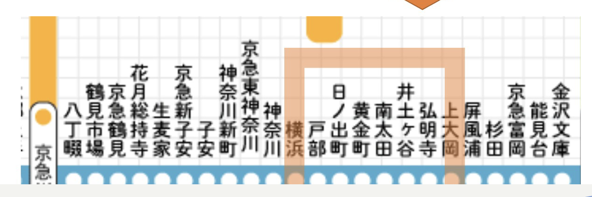
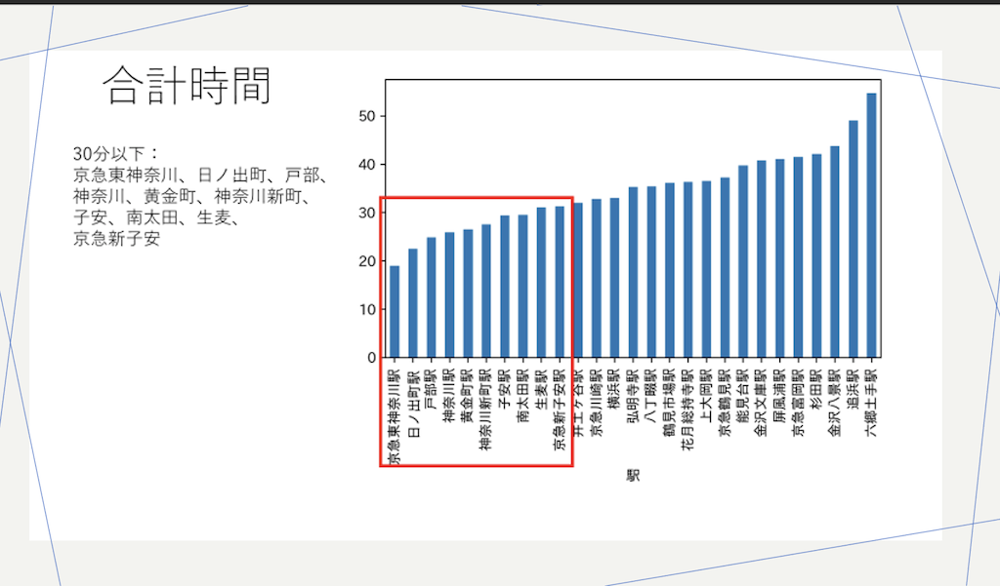
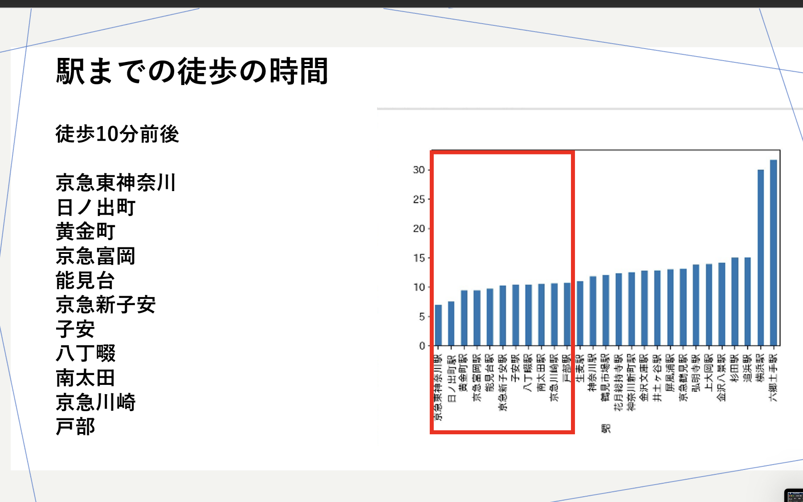
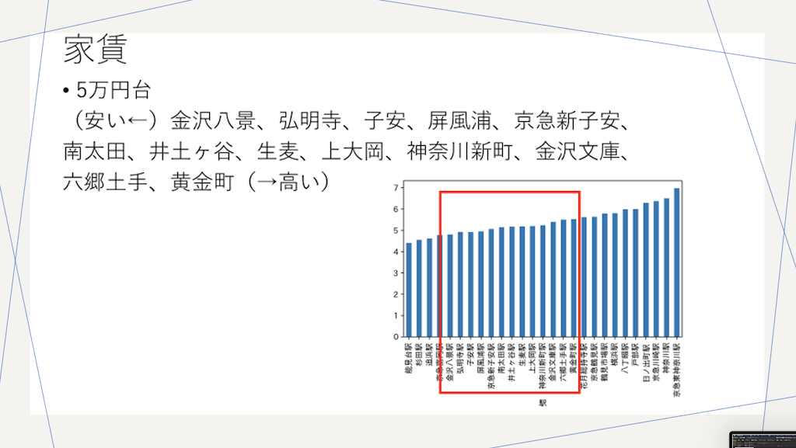

１班 発表内容
解説
授業内の発表で使用したパワーポイントは
こちらからダウンロード
１班のおすすめエリアは京急本線の戸部〜弘明寺駅周辺である。 ※画像は発表で使用したパワーポイントより

(21.11.8)班メンバーで一人暮らしをする3人（⿑藤、杉野、中澤）に物件探しで重視する/した条件をインタビュー（髙⼭）
→回答より駅までの徒歩の時間、移動時間、家賃がキーワードか。
(21/11/16)第７回の課題で各自が割り出したエリアについて情報共有
→路線を絞る：3人が挙げた京急本線を確認。一人暮らしを想定してワンルームを調べる。
＜パワーポイントより画像：合計時間・徒歩の時間・家賃＞



※ソースコードの参考：斎藤さんの「デザイン演習Ⅰ・Ⅱ」のHPから。リンクは
こちら（外部サイト）
その他、
- 横浜駅、みなとみらいエリアからの近さ
- 娯楽施設の豊富さ
- 電車の利便性
- 買い物のしやすさ
なども考慮し、戸部〜弘明寺駅のエリアに決定した。
メモ
- 京急の他に発表が多かったのは、移動時間や横浜・都心への交通の利便性、家賃相場から東急東横線の東白楽〜妙蓮寺駅周辺であった。
→私自身白楽周辺住みで、自身の第７回のデータ分析でもほぼ同じエリアが出たので納得。ただ、神大生にとってはありきたりといえばありきたりか。個人的には、飲食店が多くバスも多くてこの辺は助かる。
- データ分析の際は、実際にその状況に面した事を想定して、データに明示されていない点にも配慮したいと思った。
→治安を条件に挙げている班が多かった。治安面は何も考えておらず盲点であった。
（よくよく考えれば１班で挙げたエリアの問題点は、まさに日ノ出町〜黄金町周辺の治安である）
- グラフを紹介する際は、見やすさ（どこを見れば良いのか目印をつけるなど）に注意する。
前の画面に戻る